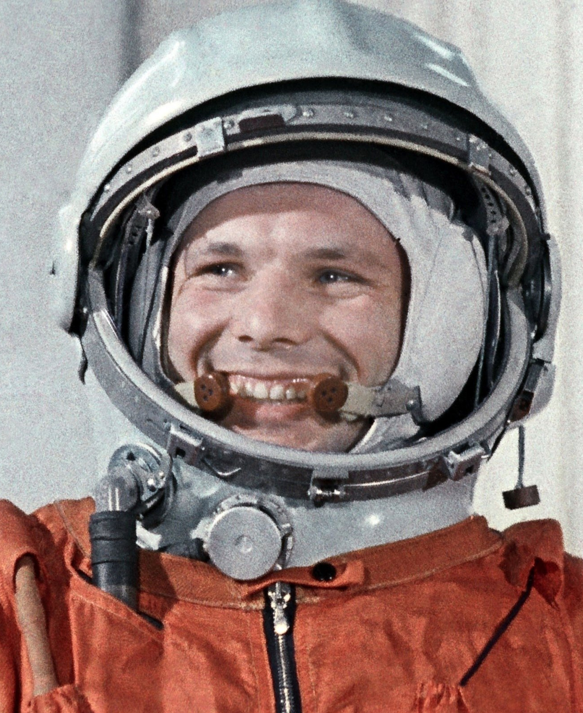
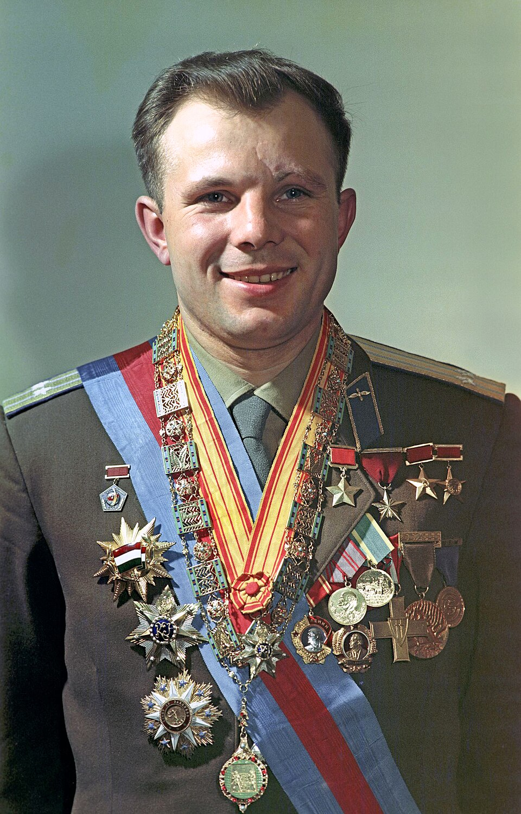

К началу 1961 года стало ясно: первый полёт человека в космос состоится в ближайшие месяцы. Из двадцати лётчиков, зачисленных в отряд космонавтов, предстояло выбрать одного. Главный конструктор Сергей Королёв и руководители программы понимали, что первый космонавт должен стать лицом не только советской космонавтики, но и всей страны. Выбор пал на старшего лейтенанта Юрия Алексеевича Гагарина — лётчика-истребителя Северного флота, который ещё в 1959 году написал рапорт с просьбой зачислить его в группу испытателей новой лётной техники.
12 апреля 1961 года в 9 часов 7 минут по московскому времени с космодрома Байконур стартовала ракета-носитель «Восток», выведшая на орбиту одноимённый космический корабль с человеком на борту. Перед стартом Гагарин произнёс легендарное «Поехали!» — эту фразу он перенял у своего инструктора, лётчика-испытателя Марка Галлая, который каждую тренировку начинал именно с этого слова.
Полёт продлился 108 минут. За это время корабль совершил один оборот вокруг Земли. Космонавт вёл наблюдения в иллюминаторы, поддерживал радиосвязь с Землёй, фиксировал свои ощущения на бортовой магнитофон. Системы жизнеобеспечения работали штатно, но никто на Земле не мог точно предсказать, как поведёт себя человек в невесомости. Именно поэтому на случай потери контроля над кораблём существовала секретная система: цифровой код для перехода на ручное управление лежал в запечатанном конверте — считалось, что ввести его правильно сможет только тот, кто сохранит ясность ума.

На высоте семи километров, как и планировалось, Гагарин катапультировался из спускаемого аппарата и приземлился на парашюте в 10 часов 55 минут у деревни Смеловки Саратовской области. Первыми людьми, встретившими космонавта на земле, оказались местные жители — Анна Тахтарова и её шестилетняя внучка Рита. Так спустя всего 108 минут после старта мир узнал, что человек вышел за пределы Земли.
«Облетев Землю в корабле-спутнике, я увидел, как прекрасна наша планета. Люди, будем хранить и приумножать эту красоту, а не разрушать её»
Первый космонавт Земли — Юрий Гагарин. После полёта он объехал десятки стран с «Миссией мира», встречался с королями и президентами, учёными и артистами. Ему принадлежат слова, ставшие символом скромности настоящего героя: «Это не моя личная слава. Разве я бы мог проникнуть в космос, будучи одиночкой? Это слава нашего народа».